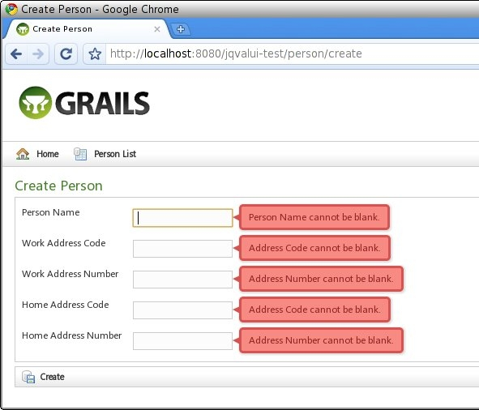
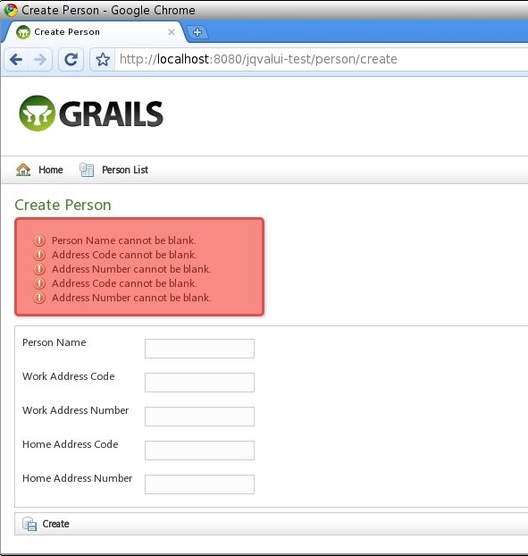

2 Usage - Reference Documentation
Authors: Lim Chee Kin
Version: 1.3
2 Usage
This section describes the usage of the jQuery Validation UI plugin.2.1 Configuration
After the plugin installed into your project, the following configurations will be appended to your project'sConfig.groovy file:// Added by the JQuery Validation UI plugin:
jqueryValidationUi {
errorClass = 'error'
validClass = 'valid'
onsubmit = true
renderErrorsOnTop = false qTip {
packed = true
classes = 'ui-tooltip-red ui-tooltip-shadow ui-tooltip-rounded'
} /*
Grails constraints to JQuery Validation rules mapping for client side validation.
Constraint not found in the ConstraintsMap will trigger remote AJAX validation.
*/
StringConstraintsMap = [
blank:'required', // inverse: blank=false, required=true
creditCard:'creditcard',
email:'email',
inList:'inList',
minSize:'minlength',
maxSize:'maxlength',
size:'rangelength',
matches:'matches',
notEqual:'notEqual',
url:'url',
nullable:'required',
unique:'unique',
validator:'validator'
] // Long, Integer, Short, Float, Double, BigInteger, BigDecimal
NumberConstraintsMap = [
min:'min',
max:'max',
range:'range',
notEqual:'notEqual',
nullable:'required',
inList:'inList',
unique:'unique',
validator:'validator'
] CollectionConstraintsMap = [
minSize:'minlength',
maxSize:'maxlength',
size:'rangelength',
nullable:'required',
validator:'validator'
] DateConstraintsMap = [
min:'minDate',
max:'maxDate',
range:'rangeDate',
notEqual:'notEqual',
nullable:'required',
inList:'inList',
unique:'unique',
validator:'validator'
] ObjectConstraintsMap = [
nullable:'required',
validator:'validator'
] CustomConstraintsMap = [
phone:'true',
phoneUS:'true'
]
}- errorClass - This class used by JQuery Validation library to create error labels, to look for existing error labels and to add it to invalid elements.
- validClass - This class is added to an element by JQuery Validation library after it was validated and considered valid.
- onsubmit = true|false - Default is
true. JQuery Validation library validates the form on submit. Set tofalseto use only other events for validation. The following code trigger validation and submit the form if all inputs are valid:
if ($('form:first').validate().form()) {
$('form:first').submit();
}- renderErrorsOnTop = true|false - Default is
false. Validation messages will display on the right of input element. Set totrueto display all validation messages on the top of the form. - qTip.packed = true|false - Default is
true. Set tofalseto view a readable .js file for development purpose. - qTip.classes - Specify the styles of qTip. Refer to qTip style documentation.
errorContainer, errorLabelContainer, errorElement, errorWrapper(wrapper), highlight, unhighlight, onkeyup and qtip configuration items supported since 1.3 released. The added configuration items in version 1.3 except qtip have equivalent options of the JavaScript validate method. Please refer to the validate options documentation for more information.The qtip configuration item is added to enabled or disabled the display of error message as qtip. qtip is disabled (qtip = false) by default to support non-obtrusive error message display and to make it possible to use the plugin in mobile HTML5 application.Client side validation enabled by JQuery Validation using Constraints Map, these Constraints Maps specify how Grails constraints map to JQuery Validation rules such as
StringConstraintsMap, NumberConstraintsMap, CollectionConstraintsMap, DateConstraintsMap and ObjectConstraintsMap (ObjectConstraintsMap is
catch-all map if the property is not belongs to any other Constraints Maps). Refer to
JQuery Validation documentation for built-in validation rules supported by the library and
additional rules
written for this plugin.CustomConstraintsMap configuration supported since 1.1 released. If previous version of the plugin was installed, upgrade to 1.1 version will not update
your Config.groovy file, please update it manually. Please see Extensibility in the features section for more information.2.2 Resources Plugin Modules
This plugin is integrated with the Grails resources plugin by providing a single module definition. This may be used by using the<r:require /> tag from the resources plugin in your page that uses the validation tags:<r:require modules="jquery-validation-ui" />2.3 Tags
The tags available for use with this plugin are listed in the right-hand side Quick Reference menu under "Tags". See the items there for more information. In particular, see the documentation on the renderValidationScript tag.2.4 Features
Supports All Standard Grails Constraints
As you can see in theStringConstraintsMap, all standard Grails constraints are supported by the plugin.Display Validation Messages on Right or Top
Display on right:Display on top:Note: To see the message style like the screen above, you need to edit line 109 ofweb-app/css/main.css as per following code:div.errors {
margin: 10px 0 5px 0;
padding: 5px 0 5px 0;
}
Extensibility
Together with the custom constraints plugin, the plugin is fully extensible with your own custom validation logic.The plugin come with 2 custom constraints, phone and phoneUS (International and US phone number validation) which enabled by the following configuration:CustomConstraintsMap = [
phone:'true',
phoneUS:'true'
]CustomConstraintsMap, for example:
CustomConstraintsMap = [
phone:'true',
phoneUS:'true',
yourCustomConstraint:'Javascript Code'
]'Javascript Code' is Javascript code specific to your custom constraints. This will be rendered by <jqvalui:renderValidationScript /> tag. Please refer to
source code of the server-side implementation of phone constraint
here
and the client-side implementation
here
(scroll down to bottom, the last method) to see how it was implemented.Internationalization Support
All client-side validation messages retrieve from messages.properties. So, both client-side and server-side validation using the same message bundle. The plugin retrieve the validation message with following codes from top to bottom:classFullName.property.constraint classFullName.property.constraint.error classFullName.property.constraint.invalid className.property.constraint className.property.constraint.error className.property.constraint.invalid
Type Validation Support
The plugin supports type validation forDate, Long, Integer, Short, BigInteger, Float, Double, and BigDecimal and retrieves the corresponding
validation message from messages.properties file by using the following message codes:typeMismatch.java.util.Date typeMismatch.java.lang.Double typeMismatch.java.lang.Integer typeMismatch.java.lang.Long typeMismatch.java.lang.Short typeMismatch.java.math.BigDecimal typeMismatch.java.math.BigInteger